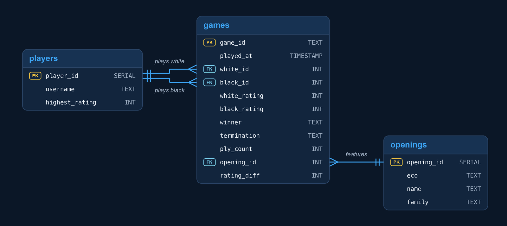

2025
Chess Openings Analytics
Which chess openings work best for beginners? I built a Python ETL pipeline that loads games from the Lichess API into a normalized PostgreSQL schema, then used SQL to analyze opening stats such as popularity and win rate across different rating levels.
